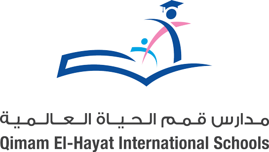

School
Advantages

World Cup
(Scores)

Information
The 2022 FIFA World Cup was an international football tournament contested by the men's national teams of FIFA's member associations and 22nd edition of the FIFA World Cup. It took place in Qatar from 20 November to 18 December 2022, making it the first World Cup held in the Arab world and Muslim world, and the second held entirely in Asia after the 2002 tournament in South Korea and Japan.
Argentina were crowned the champions after winning the final against the title holder France 4–2 on penalties following a 3–3 draw after extra time. It was Argentina's third title and their first since 1986, as well being the first nation from outside of Europe to win the tournament since 2002. French player Kylian Mbappé became the first player to score a hat-trick in a World Cup final since Geoff Hurst in the 1966 final and won the Golden Boot as he scored the most goals (eight) during the tournament. Argentine captain Lionel Messi was voted the tournament's best player, winning the Golden Ball. Teammates Emiliano Martínez and Enzo Fernández won the Golden Glove, awarded to the tournament's best goalkeeper, and the Young Player Award, awarded to the tournament's best young player, respectively. The tournament, with 172 goals, set a new record for the highest number of goals scored with the 32 team format.rights and wider FIFA corruption.